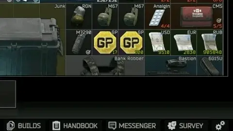

Task Automation
- Downloads
- 18,426
- Favourites
- 25
- Mod lists
- 50
Tired of spending too much time in menus?
This mod automates several task-related actions to streamline your experience:
- Automatically accepts tasks (default: on)
- Automatically accept daily tasks (default: on)
- Automatically accept tasks that can fail (default: off)
- Automatically turn in “Find and Obtain” quest items (default: on)
- Automatically turn in “Find in Raid” quest items (default: on)
- Always show a HandoverQuestItemsWindow for turning in items. (default: off)
- Threshold multipliers for turn in of currency items* (default: 1.5)
- Threshold multipliers for turn in of GP-Coins (default: 0)
- Block the automatic turn in of currency items* (default: off)
- Block the automatic turn in of weapons (default: off)
- Block the automatic turn in of plate carriers (Armors) with swappable plates above desired level (default: 3)
- Automatically completes finished tasks (default: on)
- Automatically accepts BTR tasks out of raid (default: off)
- Automatically accepts Light Keeper tasks out of raid (default: off)
*currency items are: Rubles, Dollars, Euros and GP-Coins.

When the items that are turned in are different, the HandoverQuestItemsWindow is always shown. If you decline this wil be stored in memory so the window won’t keep popin up. You can use a KeyboardShortcut (default: ctrl + r) to clear this list so the HandoverQuestItemsWindow will show again for these quests.
Inspired by the Skipper mod by Terkoiz, this mod adds the ability to automatically skip specific types of task objectives based on your preferences.
You can toggle the following objective types: (all default to off)
- Find and Obtain objectives
- Find in Raid objectives
- Leave Item at Location objectives
- Place Beacon objectives
- Sell Item to Trader objectives
- Survive and Extract objectives
- Trader Loyalty objectives
- Visit Place objectives
- Weapon Assembly objectives
- Elimination objectives
Usage:
- Open your character window to start the mod doing its job.
Installation:
- Download the mod file using the button above.
- Open the downloaded archive.
- Drag the BepInEx folder into your SPT installation directory.
Planned Features:
- Option to not take gear requirements into account to complete (Elimination) objectives.
- Ideas are welcome.
Known Issues:
No known issues at this time.- Reports from Discord that [Expanded Task Text] causses the mod to break. I’m investigating this.
Limitations:
- No known limitations at this time.
Compatibility:
- No known conflicts with other mods.
- FIKA is now supported.
Recommended optional mods:
(Always check SPT version compatibility)
Version
1.3.1
Fixed (1.3.1):
- Fixed out of raid stuttering. Thanks for reporting these issues.
Features (1.3.0):
- Added new option AutoHandleQuestsThatFailOther to not handle quests that fail other quests. (default: off) Quests like (Supply Plans, Kind of Sabotage, etc.)
Performance optimizations(1.3.0):
- Added new expert-option to config the WaitForSeconds value with minimum of 0 and maximum of 0.5 seconds (default: 0.3) do not change these values if you do not know what this is for.
Please report any bugs or problems you encounter by creating an issue here: https://github.com/PMouse23/SPT-TaskAutomation/issues
Version
1.2.4
Fixes:
- Fixed where the items chosen for handing over quest items where not used when having the UseHandoverQuestItemsWindow option set to on.
Please report any bugs or problems you encounter by creating an issue here: https://github.com/PMouse23/SPT-TaskAutomation/issues
Version
1.2.3
Fixes:
- Did a little bit of extra optimalisation to stop the automation while loading raid. Please report any bugs or problems you encounter by creating an issue here: https://github.com/PMouse23/SPT-TaskAutomation/issues
Version
1.2.2
Fixes:
- Fixed a bug where BTR tasks were automatically completed out of raid meaning you would not receive the quest rewards. To make sure you do not miss these rewards keep Automatically accepts BTR and Light Keeper options off.
Version
1.2.1
Fixes:
- Fixed a bug where going to the hideout was seen as starting a raid.
Let me know if you find some more bugs or missing features.
Version
1.2.0
New Features / Options:
- The keyboard shortcut to clear in-memory declined quest conditions (default: ctrl + r) now also restarts the coroutine. This change was made based on user feedback regarding potential issues that could not be reproduced by the developer.
- When the Debug setting is enabled, pressing ctrl + i will start an investigation to verify whether the coroutine is correctly set up. If something is wrong, an error message will be shown in the notifications. If everything is working correctly, the time since the coroutine last ran (in seconds) and the number of remaining tasks will be displayed.
Version
1.1.0
Update to SPT 4.0.0
Version
1.0.0
Full-Release: 1.0.0
- When the items that are turned in are different, the HandoverQuestItemsWindow is shown.
- Added an option to always use the HandoverQuestItemsWindow for turning in items. (default: off)
- Patched the title of the HandoverQuestItemsWindowto display the correct trader and quest name.
- When the HandoverQuestItemsWindow is declined this is stored in memory so the window won’t show again for that quest condition.
- KeyboardShortcut to clean the in memory declined quest conditions so the HandoverQuestItemsWindow will be shown again. (default: ctrl + r)
- Set file and assembly version to same as BepInPlugin so the SP-EFT Manager shows the correct version.
Version
0.9.0
New Features / Options:
- Added an option to block the hand-in off currency (Rubles, Dollars, Euros and GP-Coins) (default: off).****
- Added an multiplier threshold for hand-in of currency (default: 1.5). This means when you have to hand-in 1.000 dollars this won’t happen until you have 1.500 dollars. For GP-Coins a second option is added (default: 0). This means GP-Coins are handed in immediately.****
- Added an option to automatically accept scav tasks (default: off).
- If item is part of a Weapon or Armor the item is not used for automatic hand-in.
Let me know if you guys find some more bugs or missing features.